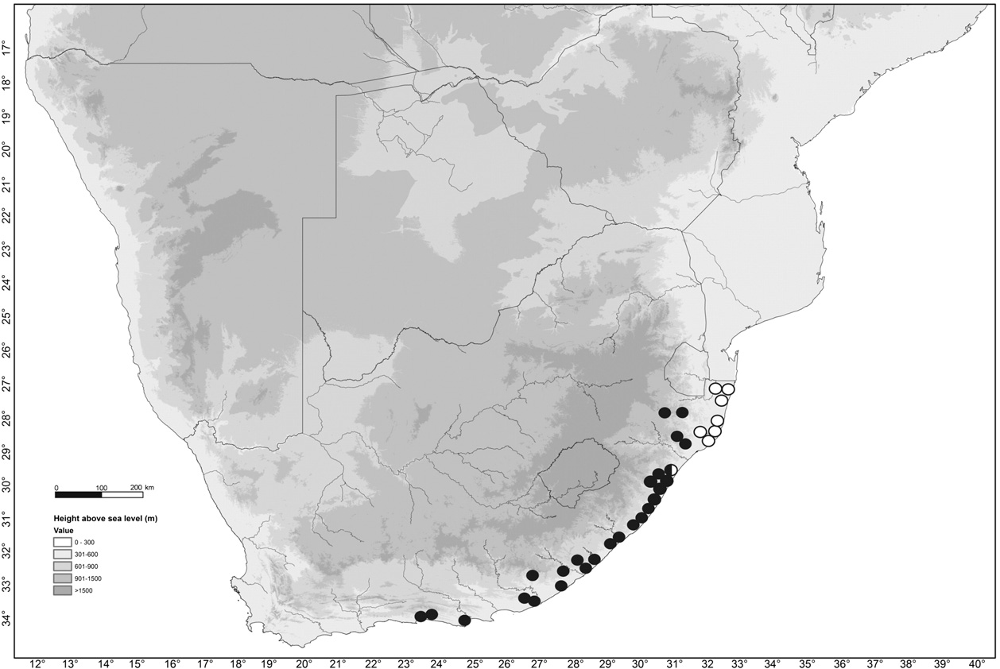

Full text is available as a scanned copy of the original print version.
Get a printable copy (PDF file) of the
complete article, or click on a page image below to browse page by page.
Links are also available for
Selected References.
Images in this article
Fig. 1 Distephanus anisochaetoides, Ross 2393 (PRE).
Fig. 2 Inflorescence details of Distephanus anisochaetoides, Ross 2393 (PRE). Scale bar: 5 mm.

Fig. 3 Distribution of Distephanus anisochaetoides, ●; and distribution in southern Africa of D. inhacensis, ○.